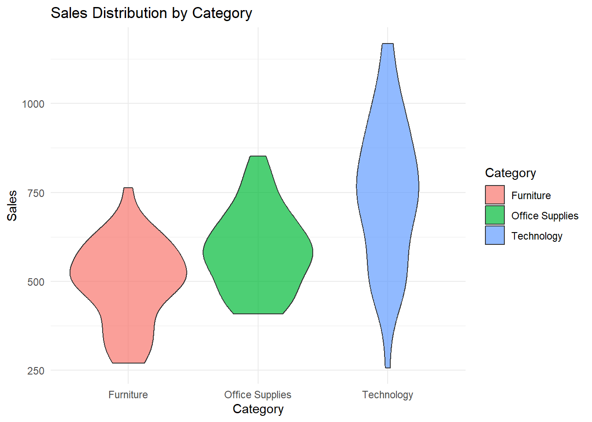
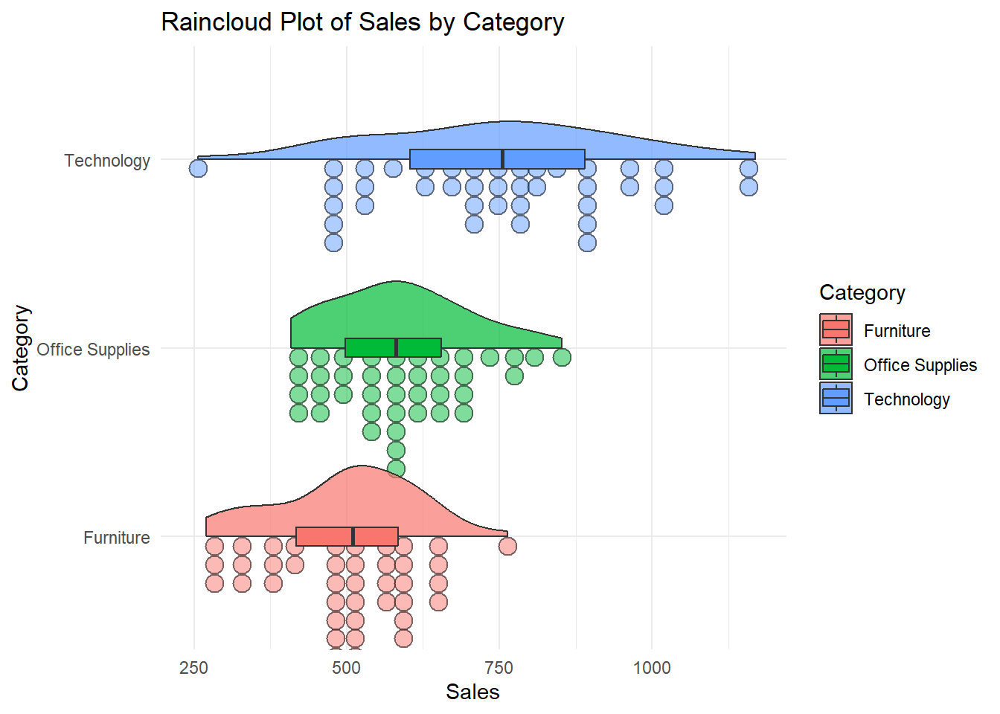
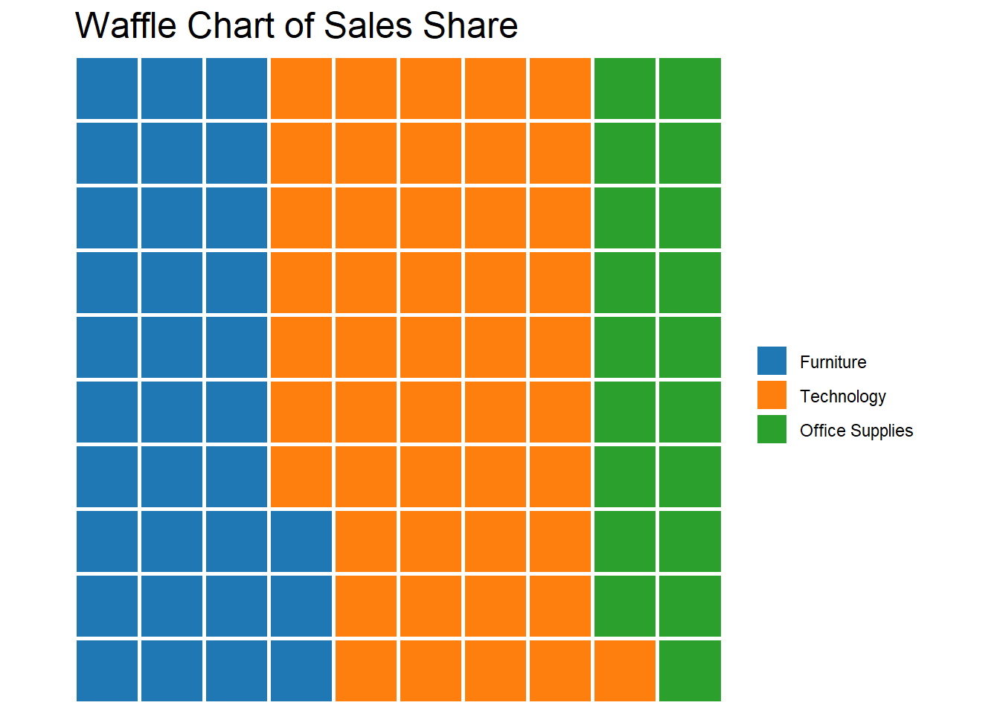
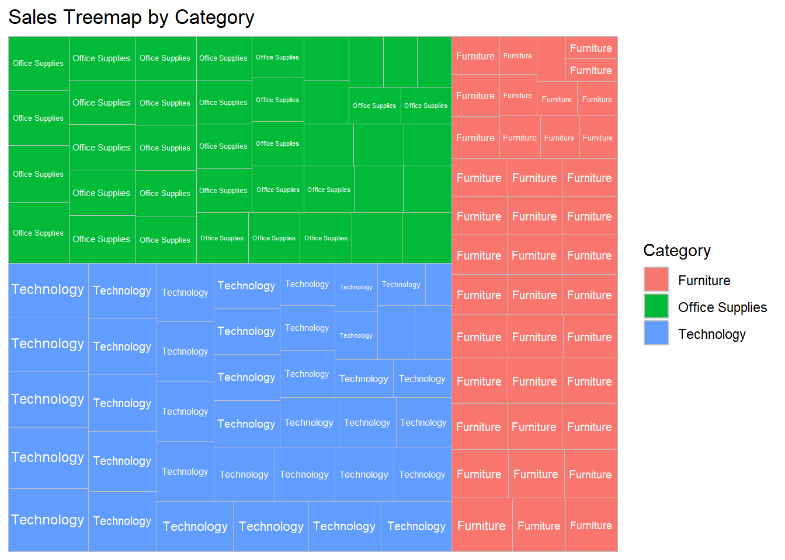
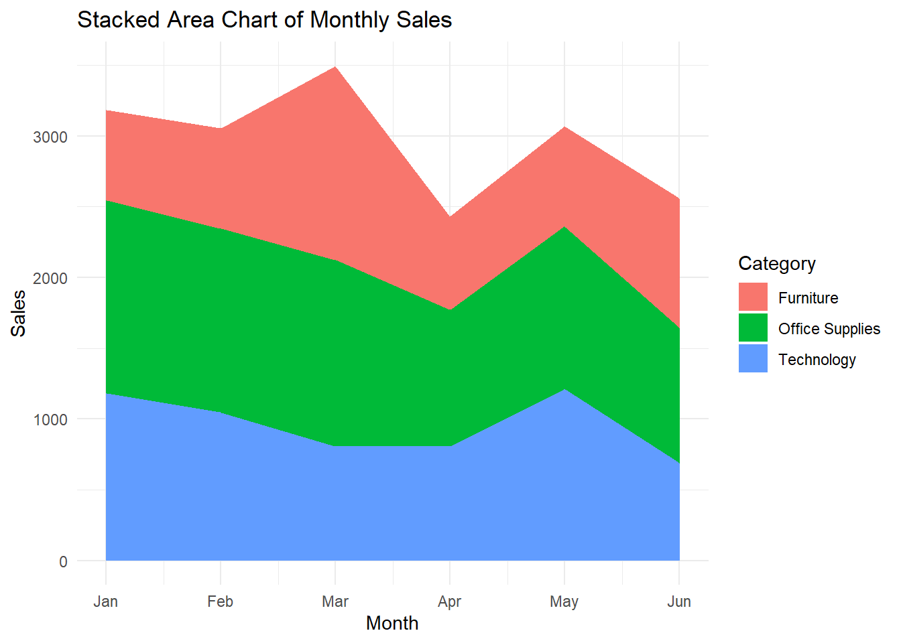
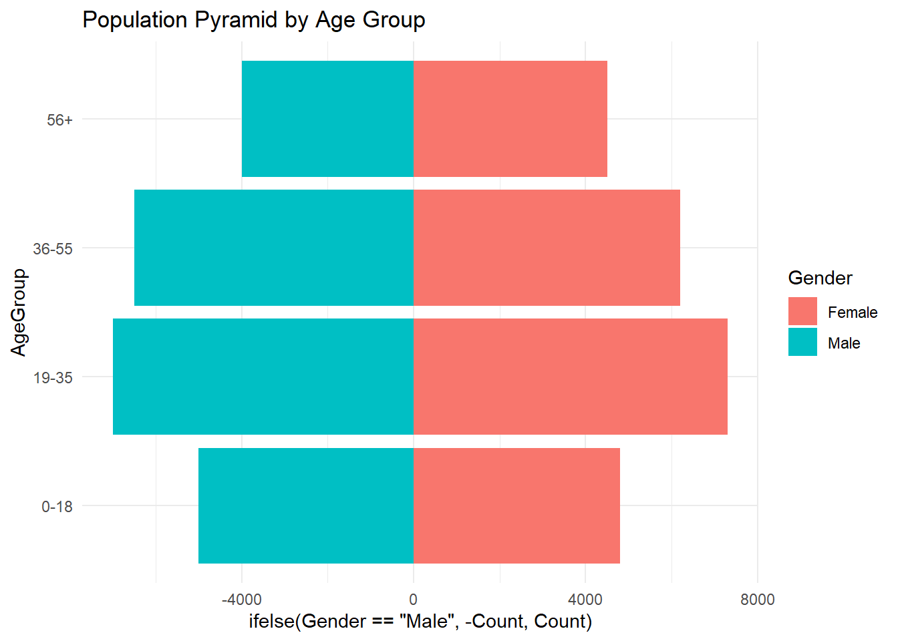
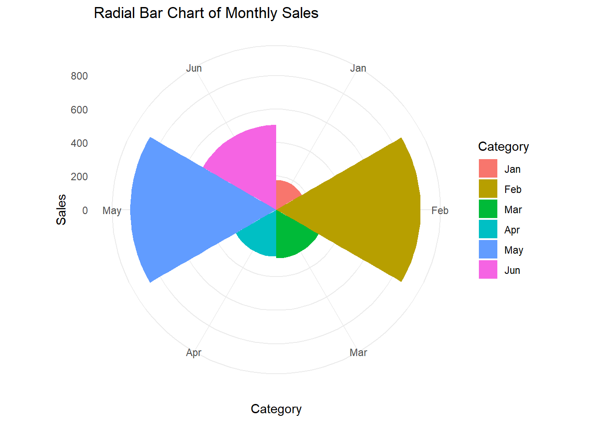
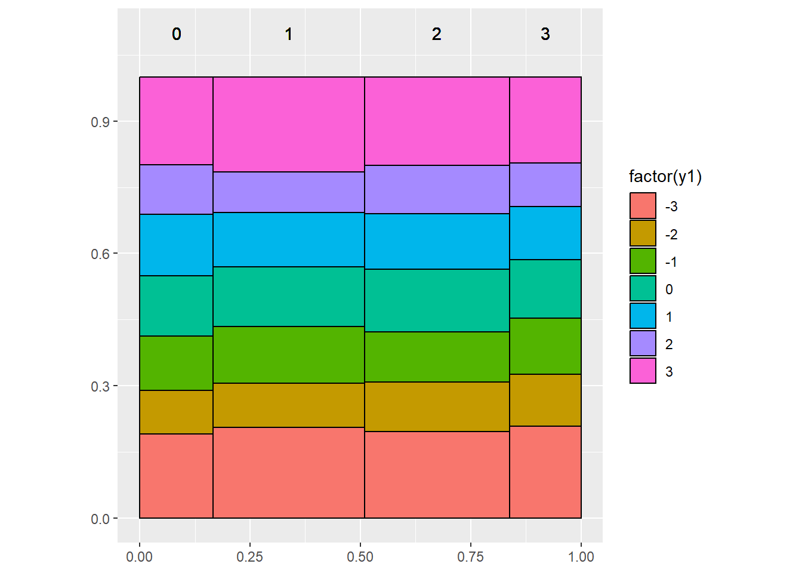
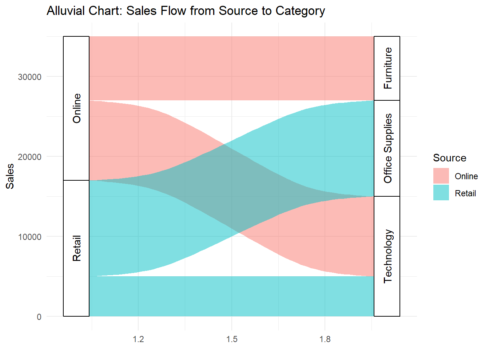

Visualizing Form and Structure: Get in Shape with Data

When Shape Does the Heavy Lifting
Not all stories in data visualization are told through length, position, or slope. Sometimes, the most powerful message comes through shape, structure, and form.
When we use geometry — circles, rectangles, wedges, grids — we move beyond simple comparisons and into a more spatial, intuitive language. We feel proportions. We sense hierarchy. We see balance or imbalance immediately.
In this world, a bigger rectangle doesn’t just mean “more” — it means dominance in structure. A slice of a doughnut isn’t just a number — it’s a share of something greater. A pyramid isn’t just stacked bars — it’s a story about populations diverging or converging.
Shape-based charts are powerful because they tap into how our brains naturally process space and volume:
Who is bigger?
What part belongs where?
How are elements nested or connected?
But they also come with their own set of risks:
Area is harder to judge than length.
Complex hierarchies can collapse into visual noise.
Pretty shapes sometimes replace clear meaning.
In this chapter of Anatomy of a Chart, we’ll explore charts where geometry isn’t decoration — it’s the message itself.
What This Article Covers
🔹 The core shape and form-based charts and where they shine.
🔹 Common design traps when working with areas, slices, and radial layouts.
🔹 Best practices for keeping these charts intuitive and meaningful.
🔹 How to know when getting in shape helps — and when it hurts.
Because in data storytelling, the right shape doesn’t just decorate the story — it becomes the story.
Core Chart Types: How & When to Use Them
Shape-based charts aren’t just decorative — they carry real structure.
Let’s explore the most practical types you can easily build in ggplot2 and its extensions, showing when to use each, what pitfalls to avoid, and what alternatives to consider.
📍 Violin Plot — Shaping Distributions
✔ What it is:
A mirrored density plot showing the distribution of a numeric variable, combined with a central axis.
✔ Best for:
Comparing distributions across categories (e.g., delivery times by shipping method).
Spotting skewness, multimodalities, or outliers.
❌ Common mistakes:
Using with too little data, leading to a misleading “shape.”
Forgetting to add boxplots or median markers for clarity.
🔀 Variations:
Split violins (using
gghalvesfor raincloud plots).Combined with jittered points for hybrid density + individual values.
🆚 Alternatives:
Boxplots for cleaner summaries.
Strip or jitter plots if you have few points and want to show every case.
📍 Raincloud Plot — Cloud and Drops Together
✔ What it is:
A combination of violin plot + jittered points + summary (mean or median), creating a richer view of distribution.
✔ Best for:
Showing both the shape of a distribution and individual observations.
Clear and engaging alternative to boxplots.
❌ Common mistakes:
Over-jittering points, making the “rain” look noisy.
Forgetting to explain layers clearly in legends or captions.
🔀 Variations:
- Align multiple raincloud plots vertically for comparisons.
🆚 Alternatives:
Pure violin plot if simplicity is better for your audience.
Density ridge plots for smoother flow.

📍 Waffle Chart — Grids That Make Proportions Tangible
✔ What it is:
A grid of squares where each unit represents a portion of a whole (like 1% = 1 square).
✔ Best for:
Simple part-to-whole comparisons (e.g., market share, survey responses).
Showing clear proportions in a compact way.
❌ Common mistakes:
Making grids too big — 100 squares is intuitive; 1000 is a mess.
Bad color choice leading to poor contrast.
🔀 Variations:
- Waffles by subgroups (small multiples of waffle grids).
🆚 Alternatives:
Pie charts (only for very simple proportions).
Stacked bar c

📍 Treemap — Rectangles Within Rectangles
✔ What it is:
A space-filling visualization where area represents value, often used for hierarchical data.
✔ Best for:
Hierarchical part-to-whole relationships (e.g., sales by region and category).
Dashboards where space is limited but multiple levels matter.
❌ Common mistakes:
Too many small tiles, overwhelming the view.
Ignoring hierarchy clarity — make groupings intuitive.
🔀 Variations:
- Color by secondary measure (e.g., profit margin in sales treemap).
🆚 Alternatives:
Stacked bar charts for fewer categories.
Sunburst charts (if radial layouts are acceptable — not our focus here).

📍 Stacked Area Chart — Form in Motion
✔ What it is:
An area chart where segments stack to show cumulative proportions over time.
✔ Best for:
Tracking part-to-whole changes across time.
Showing flow or transition dominance.
❌ Common mistakes:
Too many categories causing a “color soup.”
Misreading higher segments (only bottom aligns with axis!).
🔀 Variations:
- Streamgraphs (curvy stacked area charts) — more artistic, less precise.
🆚 Alternatives:
Line charts if total volume isn’t the story.
Stacked bars for fewer periods.

📍 Pyramid Chart — Side-by-Side Comparison
✔ What it is:
Two mirrored bar charts sharing a central axis — often used for population comparisons.
✔ Best for:
Comparing two populations (e.g., male vs female, last year vs this year).
Highlighting differences in distribution at a glance.
❌ Common mistakes:
Using too many categories, making it hard to read.
Not balancing scales properly on both sides.
🔀 Variations:
- Horizontal or vertical layouts
🆚 Alternatives:
- Side-by-side bar charts when mirroring isn’t necessary.

📍 Radial Bar Chart — Wrapped Around a Circle
✔ What it is:
A bar chart where bars are bent into a circular layout (polar coordinates).
✔ Best for:
Stylized dashboards where aesthetic impact matters.
Cyclical or periodic data (months, hours, seasons).
❌ Common mistakes:
Misleading perception of bar lengths (outer bars look bigger even if not).
Overcrowding sectors.
🔀 Variations:
- Circular progress charts (single radial bars).
🆚 Alternatives:
- Straight bar charts for serious analytical reporting.

📍 Merimekko Chart — Two-Dimensional Proportions
✔ What it is:
A combination of variable bar width + stacked segments, showing two variables’ shares at once.
✔ Best for:
- Market share vs volume type analysis (e.g., region size + market split).
❌ Common mistakes:
Misinterpreting width vs height.
Cluttered labels.
🔀 Variations:
- Color coding segments by third measure (carefully).
🆚 Alternatives:
- Stacked bar charts if width doesn’t need to vary.

📍 Alluvial Chart — Following the Flow
✔ What it is:
A flow chart showing how categories change across multiple stages or groups.
✔ Best for:
- Process flow, cohort analysis, or pathways (e.g., customer journeys).
❌ Common mistakes:
Using with too many categories, leading to tangled paths.
Ignoring ordering — needs logical flow direction.
🔀 Variations:
- Color by starting or ending category to guide the eye.
🆚 Alternatives:
- Sankey diagrams (if directional flow matters more than group transitions).

When to Use Shape-Based Charts (And When Not To!)
Shape-based charts are visually compelling — but like any powerful tool, they’re easy to misuse.
They excel when you need to show hierarchies, proportions, comparisons, or distributions.
But if you’re not careful, they can overwhelm, confuse, or even mislead.
Let’s walk through where they shine — and where they stumble.
✅ When to Use Shape-Based Charts
1. When Part-to-Whole Relationships Matter
Best charts: Waffle Chart, Treemap, Merimekko
Great for: Showing how pieces contribute to a whole.
Example: Market share by category; budget breakdowns.
2. When Comparing Two Groups Visually
Best chart: Pyramid Chart
Great for: Clear, mirrored comparisons (e.g., male vs female population).
Example: Employee demographics; customer base composition.
3. When Showing Distributions or Density
Best charts: Violin Plot, Raincloud Plot
Great for: Highlighting variation, spread, skewness.
Example: Delivery time variability; profit per product line.
4. When Showing Hierarchies Visually
Best chart: Treemap
Great for: Nested groups where both total and subgroup matter.
Example: Revenue by division → product line.
5. When Tracking Flow Across Categories
Best chart: Alluvial Chart
Great for: Customer journeys, process flows, category transitions.
Example: From lead source to final product purchased.
❌ When NOT to Use Shape-Based Charts
1. When Precise Values Are Critical
Issue: Humans struggle to compare areas precisely.
Better: Bar charts or tables for exact figures.
2. When You Have Too Many Small Categories
Issue: Treemaps, Merimekkos, and Alluvials collapse into tiny unreadable pieces.
Better: Aggregate categories or switch to simple bar/line plots.
3. When Data Is Sparse
Issue: Violin plots and rainclouds mislead if there aren’t enough points to show meaningful density.
Better: Use strip plots or dot plots to show individual cases.
4. When Familiarity Matters
Issue: Radial bars, Merimekkos, and Alluvials can confuse unfamiliar audiences.
Better: Stick with bars or stacked bars for a safer choice.
5. When Time Series Must Be Shown Clearly
Issue: Stacked area charts and radial bars can distort timelines visually.
Better: Use line charts for clean time tracking.
🔄 Choosing Alternatives Wisely
| If You Want To… | Use This… | Instead of… |
|---|---|---|
| Compare exact quantities | Bar Chart | Treemap, Waffle Chart |
| Show full data distribution | Violin Plot / Raincloud Plot | Boxplot alone |
| Summarize hierarchy visually | Treemap | Multi-level table |
| Show category flow | Alluvial Chart | Complex multi-bar charts |
| Present part-to-whole simply | Waffle Chart or Stacked Bar Chart | Pie Chart (if many slices) |
✍️ Final Word on “When to Use”
Shape-based charts work beautifully when you want to emphasize structure, composition, and relationships — not just raw totals.
But they require careful selection, simplification, and storytelling clarity to avoid turning your visual into confusing noise.
Pro Tips & Best Practices for Shape-Based Charts
Shape-based charts can spark understanding or confusion — depending entirely on your design choices.
Here’s how to keep them powerful, clear, and visually meaningful.
✅ 1. Simplify Wherever Possible
Why it matters:
The more categories or segments you add, the harder it is to read areas and proportions.
Best practice:
Group small categories into “Other” if necessary.
Limit to 5–7 primary groups when possible.
In Alluvial Charts: reduce stages and flows unless clarity demands complexity.
✅ 2. Mind the Scale of Area Perception
Why it matters:
Humans are bad at judging area accurately (even worse with circles or irregular shapes).
Best practice:
In Waffle Charts and Treemaps, keep square proportions intuitive.
In Radial Bar Charts, remember outer bars look larger (even with same value).
✅ 3. Label Carefully — And Sparingly
Why it matters:
Tiny text on tiny tiles or flows adds confusion, not clarity.
Best practice:
Use direct labeling inside large areas.
For smaller areas, add tooltips (in interactive dashboards) or use aggregated legends.
In static charts, consider removing labels from smallest segments.
✅ 4. Keep Color Functional, Not Just Beautiful
Why it matters:
Color overload reduces focus instead of enhancing structure.
Best practice:
Use color to encode groups logically — not just random aesthetics.
Avoid rainbow palettes for complex treemaps or flows.
Highlight key differences with contrast, not saturation.
✅ 5. Sort or Order for Logical Reading
Why it matters:
Random placement or ordering forces the viewer to work harder.
Best practice:
In Treemaps, Waffle Charts, and Alluvials: order by size, flow volume, or logical sequence.
In Pyramid Charts: order age groups or categories top-down for consistency.
✅ 6. Add Minimal Annotations for Context
Why it matters:
Sometimes a single guiding annotation unlocks the chart’s story.
Best practice:
Brief text inside a large Treemap tile (“Top Seller: Chairs”).
Arrow annotations in Alluvial Charts highlighting largest flow.
Simple headline at the top summarizing what the user should notice.
✅ 7. Avoid Fancy but Misleading Shapes
Why it matters:
Shape is storytelling — but it’s easy to fall into decoration over clarity.
Best practice:
Use Waffles, Treemaps, Alluvials when structure matters — not to “make it look cooler”.
Avoid distortion effects like 3D blocks, curved grids, exploding radial charts.
Quick Design Cheatsheet
| Focus | Best Move | Worst Trap |
|---|---|---|
| Simplicity | Group small segments | Show dozens of tiny slices |
| Color | Logical color schemes | Rainbow chaos |
| Labels | Big areas labeled directly | Tiny text everywhere |
| Shape | Straightforward grids or rectangles | Twisted paths, over-curved arcs |
✍️ Closing Tip
In shape-based charts, form IS function.
If the shape, structure, or flow doesn’t make the story easier to see, it’s getting in the way, not helping.
Design with purpose, simplify aggressively, and let geometry carry meaning.
Final Thoughts & Takeaways
Shape-based charts are where data meets geometry, and when done right, form becomes function.
Unlike bar charts or line charts, which guide the eye along fixed axes, shape-based charts invite the viewer to explore space:
Where is the biggest part?
How are things grouped?
What flows where?
They don’t just show values — they show relationships, structure, hierarchy, and movement.
That’s what makes them powerful — and also why they demand careful, intentional design.
🎯 Key Takeaways
✔ Use Shape-Based Charts When Structure or Composition Matters
Part-to-whole (Waffle, Treemap, Merimekko)
Group comparisons (Pyramid)
Distributions and spreads (Violin, Raincloud)
Flows and pathways (Alluvial)
✔ Simplify ruthlessly
Too many categories = chaos.
Group small segments. Focus attention.
✔ Help users navigate shapes
Logical color coding.
Smart labels.
Minimal but strategic annotations.
✔ Always ask: Does the shape make the insight easier or harder?
- If harder → simplify or change the chart.
🧠 Why Shapes Work — But Not Always
Humans are wired to understand space, balance, and proportion.
That’s why Waffle Charts, Treemaps, and Alluvial flows can feel so immediate and powerful.
But that same instinct makes us terrible at judging exact areas — so when precision matters, switch back to bars, lines, or tables.
Shape is your ally — but it’s not your substitute for clarity.
✨ The Big Lesson of Episode
In data visualization, getting in shape doesn’t mean just making your charts prettier.
It means shaping your story around how humans naturally see and understand space:
Highlight what’s big.
Group what’s close.
Show what flows.
Get in shape — so your data can get in front of your audience’s mind.